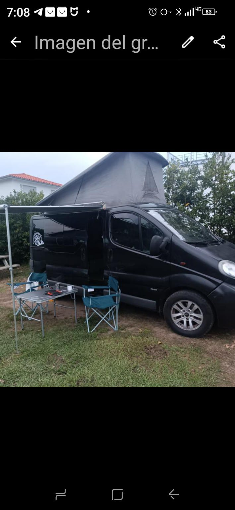
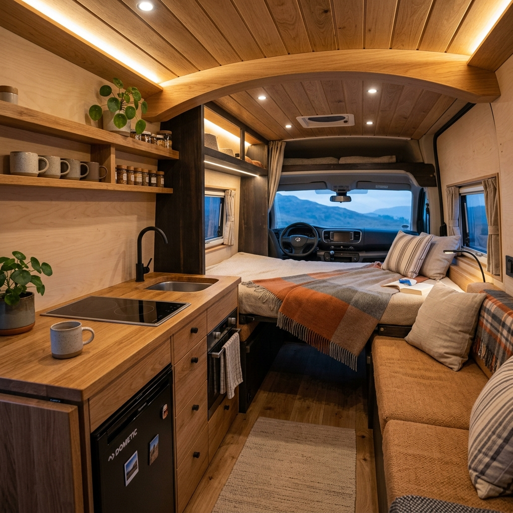
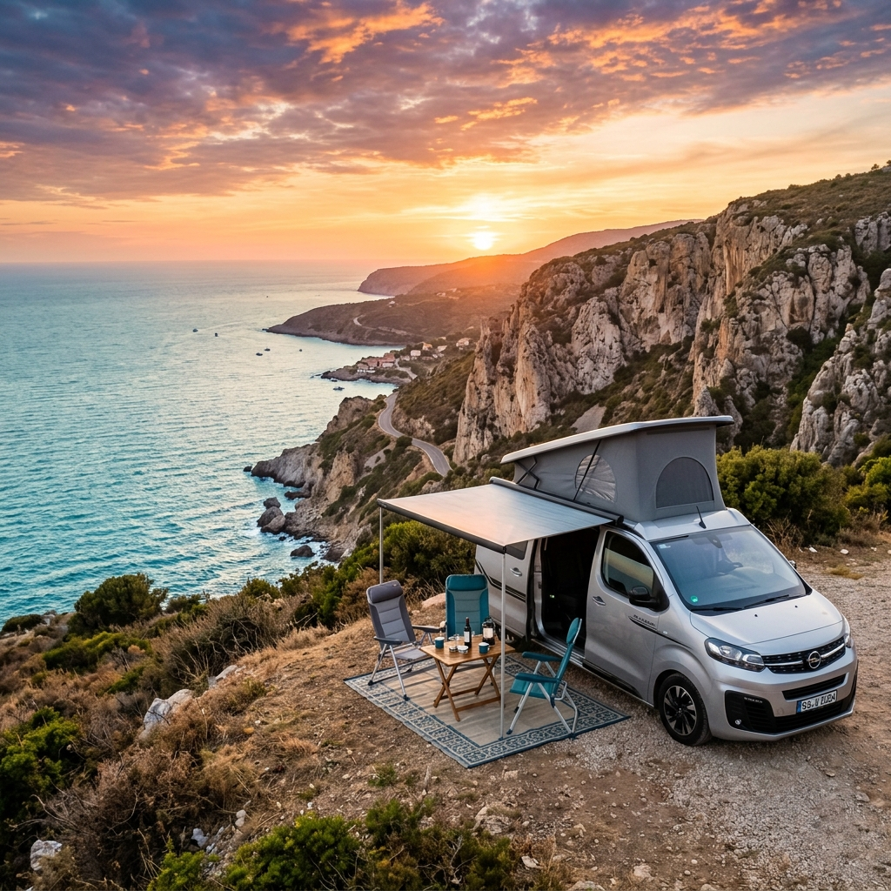
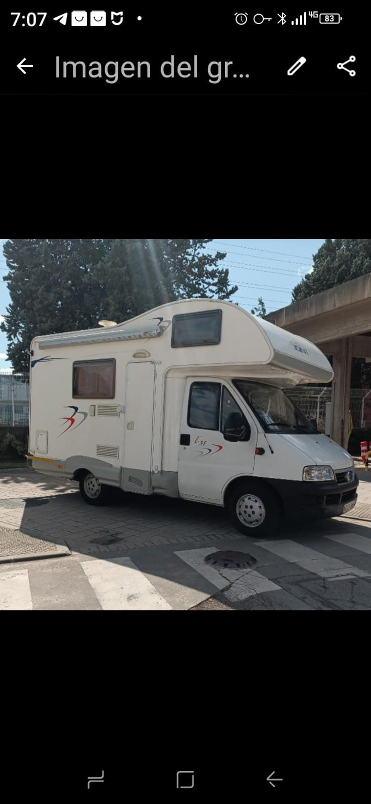
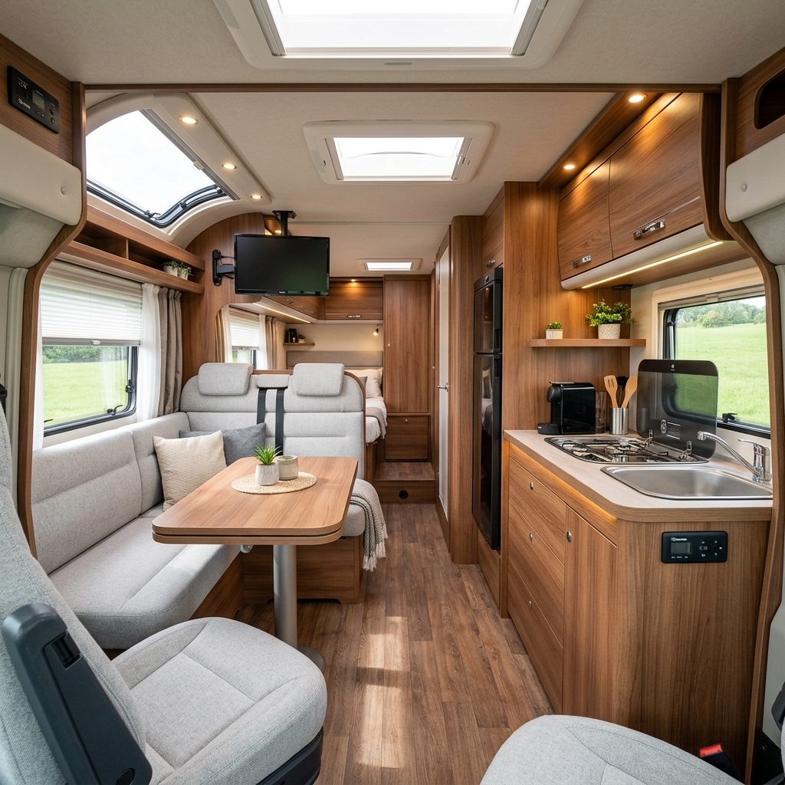
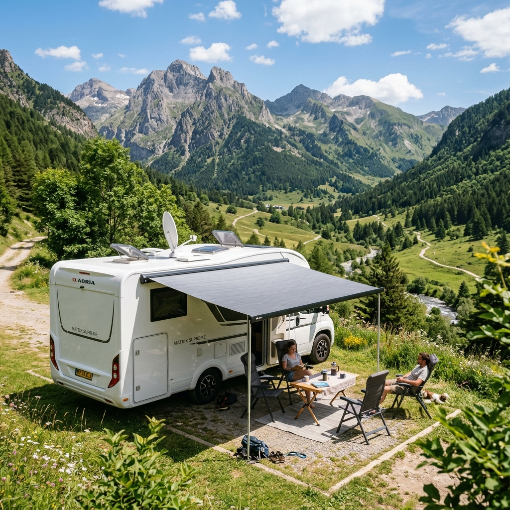
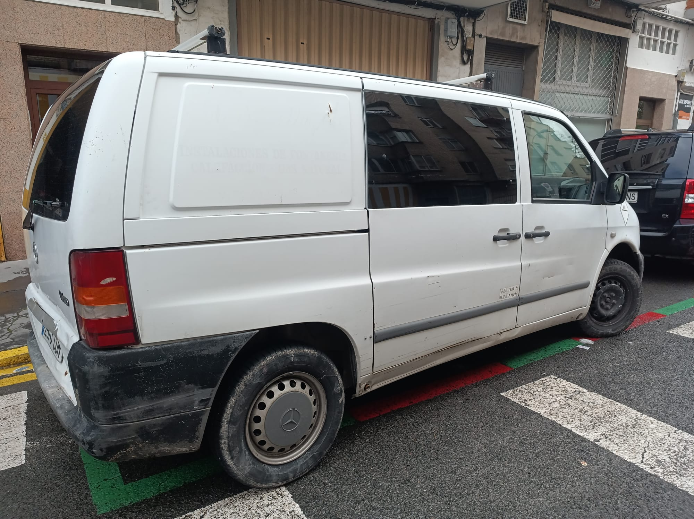
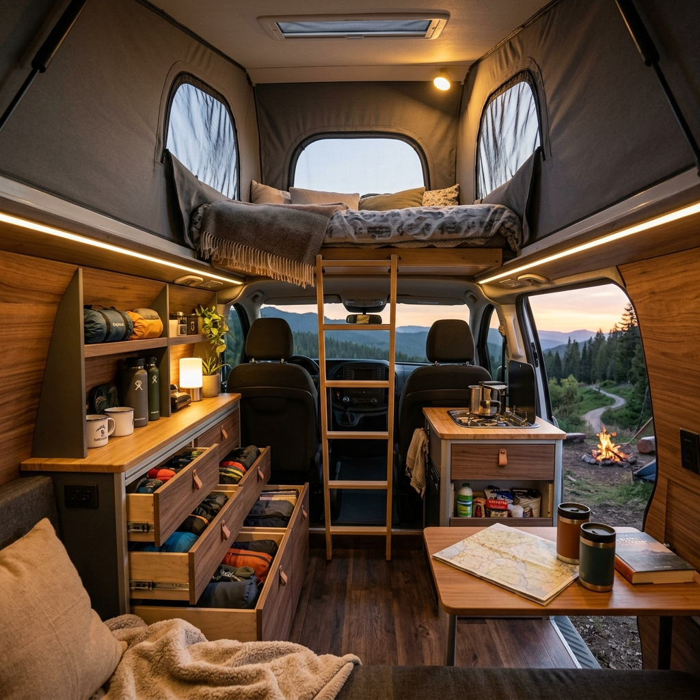
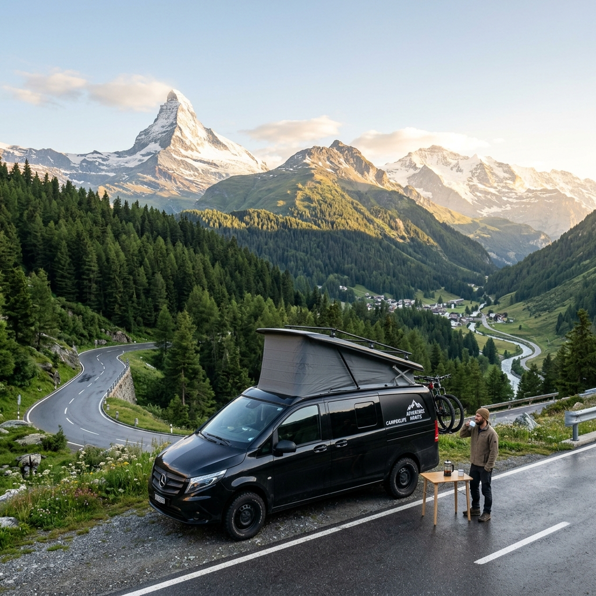

Nuestra Flota en Vitoria
Vehículos listos para salir a la carretera
Tres modelos completamente equipados con recogida directa en nuestra sede de Vitoria-Gasteiz.



Opel Vivaro Camperizada
5 plazas viajar · 4 plazas dormir (4 adultos)
🛏️ Cama doble inferior
🛏️ Cama techo elevable
🍳 Cocina portátil gas
⛺ Toldo exterior
🧊 Nevera congelador
Desde 95 € / día
Reserva ahora tu aventura
Confirma tus fechas en tu plataforma favorita:



Autocaravana CI L51
4 plazas viajar · 2 adultos + 1 niño dormir
🚿 Ducha caliente
🚽 WC químico
🍳 Cocina completa
🔥 Calefacción estacionaria
⛺ Toldo protector
Desde 110 € / día
Reserva ahora tu aventura
Confirma tus fechas en tu plataforma favorita:



Mercedes Vito Camperizada
4 plazas viajar · 2 plazas dormir
🛏️ Cama doble confortable
🍳 Cocina portátil
🔌 Toma corriente exterior
🚲 Portabicicletas
Desde 85 € / día
Reserva ahora tu aventura
Confirma tus fechas en tu plataforma favorita: